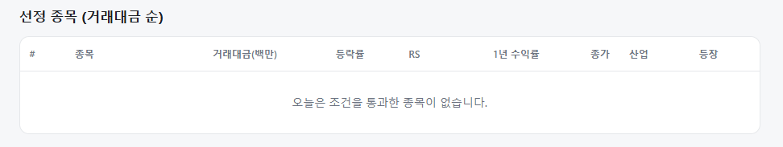
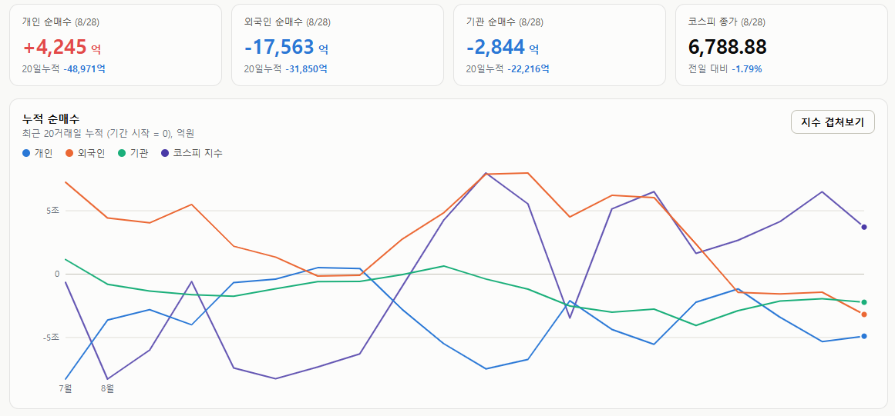
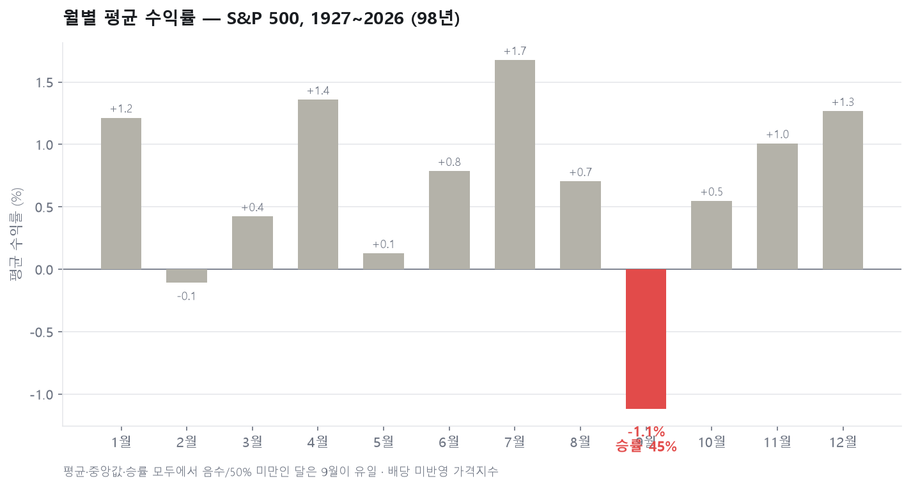
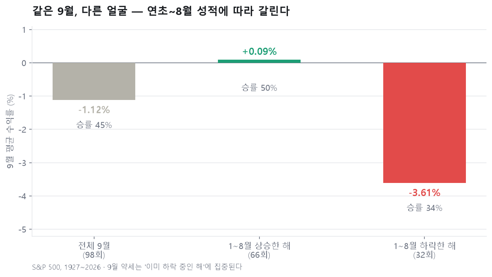

매일의 주도주 정리를 위해 기록합니다.
연속적으로 나온 종목들 또는 상승 후 조정받는 종목 위주로 리서치 해보시면 좋을 것 같습니다.

*오늘 선정된 종목은 없습니다.
#주도섹터
인터넷·핀테크 및 화장품·바이오
인터넷과카탈로그 업종이 +7.40%, 화장품 업종이 +6.33% 상승했습니다. 테마 단위에서는 지역화폐(+7.16%) 및 전자결제(+5.03%) 섹터로 수급이 몰렸습니다.
종목별로는 지역화폐 및 핀테크 모멘텀을 확보한 쿠콘이 +23.65% 급등했으며, 신풍제약(+15.27%), 실리콘투(+7.83%), NAVER(+1.62%) 등이 강세를 보였습니다.
#조정섹터
반도체 메가 캡 및 일부 2차전지 소재
외국인의 1.7조 원대 매도 폭탄이 반도체 대형주에 집중되며 삼성전자가 -3.38%, SK하이닉스가 -4.39% 동반 급락해 지수 하방 압력을 가중시켰습니다.
SK아이이테크놀로지(-8.84%) 등 일부 2차전지 분리막 및 소재 섹터에서도 큰 폭의 차익 실현 매물이 출회되었습니다.
#수급동향

코스피 지수는 전일 대비 -1.79% 하락한 6,788.88로 마감하며 6,800선을 내어주었습니다. 대형주 중심의 코스피 200 지수 역시 -2.10% 하락한 1,065.70을 기록하며 상대적으로 낙폭이 컸습니다. 반면 코스닥 지수는 +0.09% 상승한 838.41로 강보합 마감했습니다.
유가증권시장에서 외국인 투자자가 1조 7,563억 원, 기관 투자자가 2,844억 원을 각각 순매도하며 지수 하락을 주도했습니다. 개인 투자자는 4,245억 원을 순매수하며 출회 매물을 일부 방어했습니다.
잭슨홀 미팅에 대한 기대치가 낮아지고 한국은행의 내년 금리 인상 가능성이 제기되면서 시장 전반의 투자 심리가 급격히 냉각되었습니다.
S&P500 9월은 정말 최악의 달인가 — 100년 데이터로 따져봤습니다
"9월은 미국 주식의 최악의 달"이라는 말이 있습니다. 마침 지금이 8월 말이니, 이 통설이 사실인지 S&P 500 지수 98년 치(1927~2026)로 직접 세어봤습니다.
결론부터 말하면 통설은 사실입니다. 9월의 평균 수익률은 -1.12%로 12개월 중 꼴찌입니다. 단순히 꼴찌인 정도가 아니라, 평균과 중앙값(-0.42%)과 승률(45%) 세 지표 모두에서 유일하게 마이너스이거나 50%를 밑도는 달입니다.

시대별로 잘라도 결과는 같습니다. 1927~49년 -2.8%, 1950~79년 -0.3%, 1980~99년 -0.2%, 2000년 이후 -1.3% — 어느 시대를 잘라도 평균이 음수인 달은 9월뿐입니다. 특정 시기의 우연이 아니라는 뜻입니다. 참고로 대폭락의 달로 유명한 10월은 평균 +0.55%, 승률 59%로 오히려 무난합니다. 9월은 꾸준히 나쁘고, 10월은 가끔 최악일 뿐입니다.
그런데 뜯어보면 성격이 알려진 것과 다릅니다. 최악의 9월 다섯 번(1931년 -30% 등)만 빼면 평균은 -0.3%로 줄어듭니다. 최근 21년만 보면 평균은 -0.5%인데 중앙값은 +1.1%입니다. 평범한 해의 9월은 생각보다 무해하고, 2008년(-9.1%)이나 2022년(-9.3%) 같은 위기의 해가 평균을 끌어내리고 있다는 얘기입니다.
이 관찰을 한 걸음 밀고 나가면 이 글에서 가장 쓸모 있는 숫자가 나옵니다. 연초부터 8월까지의 성적으로 98번의 9월을 둘로 나눠봤습니다.

1~8월에 상승했던 해의 9월은 평균 +0.09%, 승률 50%. 그냥 평범한 달입니다. 반면 1~8월에 이미 하락 중이던 해의 9월은 평균 -3.61%, 승률 34%로 처참합니다. 9월 효과의 실체는 "달력이 9월이라 빠진다"가 아니라 "약세장의 하락이 9월에 가속된다"에 가깝습니다. 최악의 9월 목록(1931·1937·1974·2002·2008·2022)이 전부 약세장 한복판이라는 사실과 정확히 일치합니다.
오히려 흥미로운 건 그다음입니다. 9월이 하락했던 중간선거 해 13번의 이후 세 분기는 평균 +15.7%, 승률 92%였습니다. 9월의 부진이 중간선거 이후의 강세 구간을 훼손한 적은 거의 없었다는 뜻입니다.
왜 하필 9월인지에 대해서는 뮤추얼펀드 회계연도 마감(10월 말)을 앞둔 손실 확정 매도, 여름휴가에서 복귀한 기관의 리스크 재평가, 9월에 몰리는 채권 발행 수급, 그리고 통설 자체의 자기실현 같은 가설들이 있지만, 어느 것도 결정적으로 증명되지는 않았습니다. 원인이 불분명한 채로 꾸준한 패턴이라는 점은 감안해야 합니다.
정리하겠습니다. 9월이 역사상 최악의 달인 것은 사실입니다. 다만 그 약세는 "이미 하락 중인 해"에 집중돼 있었고, 상승 추세의 해에서 9월은 통계적으로 평범했습니다. 올해처럼 연초부터 8월까지 상승해온 해라면, 역사가 말해주는 9월은 공포의 달이 아니라 그냥 조금 조심스러운 달 정도입니다. 그리고 설령 9월이 나빠도, 중간선거 해의 4분기부터는 역사적으로 가장 유리했던 구간이 기다리고 있습니다.
한주도 수고많으셨습니다!
즐거운 주말 보내세요:)